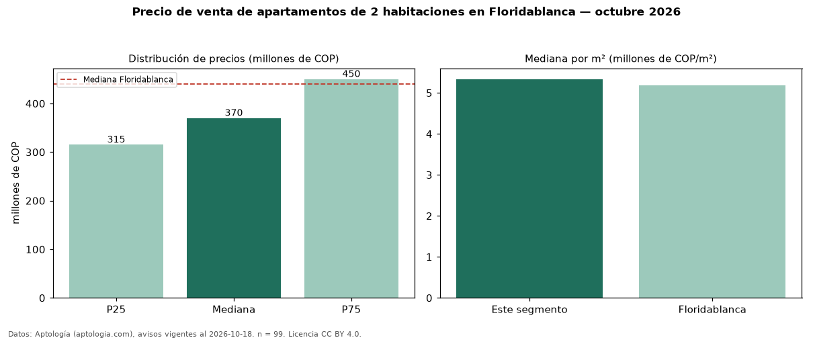

Precio de venta de apartamentos de 2 habitaciones en Floridablanca — octubre 2026
En Floridablanca, la mediana de precio de venta de apartamentos de 2 habitaciones es COP 370 millones, según 99 avisos vigentes. Frente a la mediana de todos los apartamentos en venta de Floridablanca (COP 440 millones), queda 16 % por debajo. Por metro cuadrado, la mediana es COP 5,33 millones/m² (n = 99 avisos con área). Con el precio por m² de arriendo del mismo segmento (COP 30.159/m² al mes), la rentabilidad bruta implícita es 6,8 % anual (aproximación con medianas de ofertas distintas). El área mediana anunciada es 68 m². La administración mediana declarada es COP 320.000 al mes (n = 75). El estrato más frecuente es 5 (38 % de los avisos con estrato). 86 % de los avisos con el dato declara parqueadero o cochera. Datos: Aptología (aptologia.com), CC BY 4.0 — https://www.aptologia.com/venta/floridablanca. Archivos: PDF, CSV con las cifras y gráfica PNG.

| Avisos únicos | 99 |
|---|---|
| Percentil 25 | COP 315.000.000 |
| Mediana | COP 370.000.000 |
| Percentil 75 | COP 450.000.000 |
| Mediana por m² | COP 5.333.333 |
Fuente: avisos vigentes de portales inmobiliarios recopilados por Aptología, deduplicados (mínimo 30 avisos únicos por celda). Precios pedidos, no cerrados. Fecha: 2026-10-18.